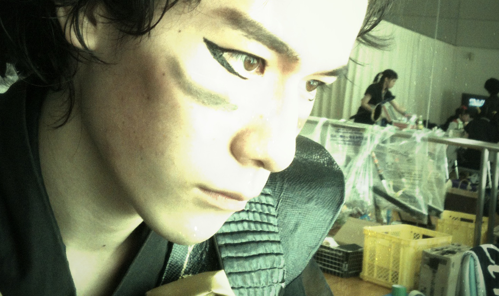
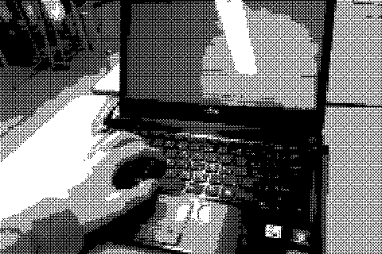

| 氏名 | 久保田 志音 |
|---|---|
| 生年月日 | 1993年 10月 29日 |
| 趣味 | 芝居(鑑賞・演技) / 殺陣アクション / ゲーム |
| 中学1年時より芝居・演劇活動を開始。 舞台の上での経験を通して、”チームでエンターテイメントを作る”感動を知る。 高校1年時にプログラミングに出会い、プログラマーとしての将来を意識し始める。 | |
| 使用経験のある言語 | C# / C++ / javascript / Java |
|---|---|
| 使用した環境など | PlayStationMobileSDK / Wizapply / enchant.js / XNA / Unity |

私は芝居が好きだった。
無論、観るのも好きだし、中学1年生のときから役者としても活動してきた。
また、ゲームが好きだった。
子供のときから今に至るまで、友達や家族と共に長い間親しんできた。
私はゲームを、芝居を、または音楽や映画を愛してきた。
この敬愛するエンターテイメントの世界で、自身が"作る人間"になる。
それが私の夢の一つである。

もう一つ。私はプログラミングが好きだ。
私が数あるエンターテイメントの中でゲームを選んでいる理由も、
一つは単に、ゲームこそが最強のエンタメと確信しているから。
そしてもう一つが、プログラムが好きだからである。
好きな技術で好きなモノを作る。
私の力はまだまだ未熟で、上を見れば果てが無い。
しかし、"好きなモノ"に向ける熱意と向上心だけは、
誰にも負けないつもりである。
私はこの学生時代、とにかく経験を重ねることでゲームプログラムの技術を体得してきた。
毎日20時まで使える学校の教室を利用して仲間たちとチーム製作に励み、
GameJam(超短期のゲーム製作イベント)などのイベントにも積極的に参加してきた。
ゲームを作ること、技術を向上させることに喜びを感じたし、単純にその行為自体が楽しかったからである。
しかし、まだ足りない。
まだ未熟なこの力を鍛えるためには、どんな事でも周りから吸収していくことが必要不可欠である。
幸い社会には、尊敬すべきプロフェッショナルが何十人も何百人も存在するのだ。
私がこれからやらねばならないのは、そんな人たちから学び取り、考え、自分のものにしていく事。
I think! I can!!
常に学び、成長していく技術者でありたい。